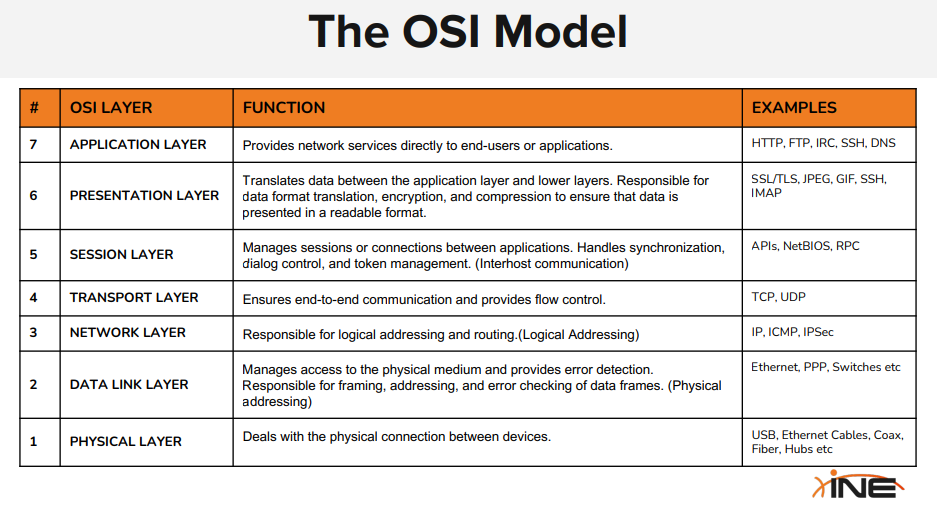

Network Protocols:
Hosts are the systems and devices like PCs, mobiles etc.
Large number of protocols.
Comms in network through use of packets.
Packets are stream of information.
Every packet has
A Header. important information where to go or received
A Payload. the information of the payload
Header:
Correctly interpretted and the host in network is known what is the host etc.
Payload is the data.
OSI Model
open system information
It has seven layers
Please Do Not Throw Sausage Pizza Away
